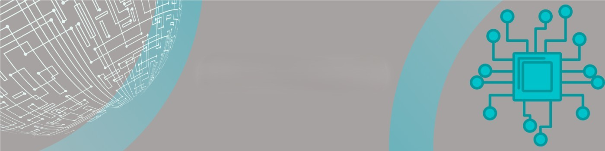

Intro

I help businesses unlock efficiency, automation, and smarter decision-making through Microsoft Power Platform.
With over 5 years of IT support experience and 3 years specializing in low-code/no-code development, I design, build, and deploy powerful, secure, and scalable business solutions using Power Apps, Power Automate, and Power BI — seamlessly integrated with Microsoft 365, SharePoint, and Dataverse.
As a Power Platform Developer and Citizen Developer for Atlas Copco operations across Africa and the UK, I’ve delivered real-world solutions that automate processes, improve reporting, and empower organizations to operate with greater agility.
Whether you need custom apps, automated workflows, or real-time business insights, I bring both the technical skill and business understanding to turn your ideas into reality.
Let’s simplify your processes and drive your business forward with the power of automation.
Work
Power Platform Solutions Portfolio
Here is one of the most impactful solutions delivered, among many others:
Multi-Country Canteen Management Application
Regions: UK, Zambia, Kenya
Tools: Power Apps | Power Automate | Power BI | SharePoint | QR Code Integration
Project Highlights:
Developed and successfully implemented a powerful, digital Canteen Management System that revolutionized how meals are managed and tracked across three countries.
Business Value:
Seamless Meal Management
Employees and visitors now enjoy a fast, hassle-free meal service through unique QR codes, eliminating paperwork and improving service speed.
Automated Workflows & Real-Time Approvals
Visitor meal requests are automatically routed to managers for approval via Power Automate, saving time and reducing human errors.
Smart Reporting & Dashboards
Power BI dashboards provide real-time insights into daily meal consumption, operational trends, and cost management, empowering managers with data-driven decision-making.
Secure, Centralized Data
All records are securely stored in SharePoint, ensuring easy access, traceability, and enhanced data security.
Why It Stands Out:
This solution not only automated traditional manual processes but also brought cross-country standardization, improved security, and optimized canteen resource planning.
About
Passionate about transforming business challenges into smart, automated solutions powered by the Microsoft Power Platform. Skilled Power Platform Developer with over 7 years of IT experience, specializing in building low-code, high-impact business applications that drive efficiency, accuracy, and agility. With successful deployments across multiple countries, including Zambia, Kenya and the UK, solutions that have streamlined operations for global teams.
Power Platform Expertise Includes:
- Power Apps – Rapid development of custom business applications tailored to your unique operational needs, accessible across mobile and desktop devices.
- Power Automate – Seamless automation of approval processes, notifications, and workflows, reducing manual tasks and errors.
- Power BI – Real-time reporting and business intelligence dashboards that turn raw data into actionable insights for better decision-making.
- SharePoint & Microsoft 365 Integration – Connected platforms for secure data storage, collaboration, and system-wide consistency.
Email: peth.chiseke@gmail.com
Phone: +260 977 990 934
Plot No. 9, Handsworth Park, Lufwanyama Rd, Lusaka, Zambia